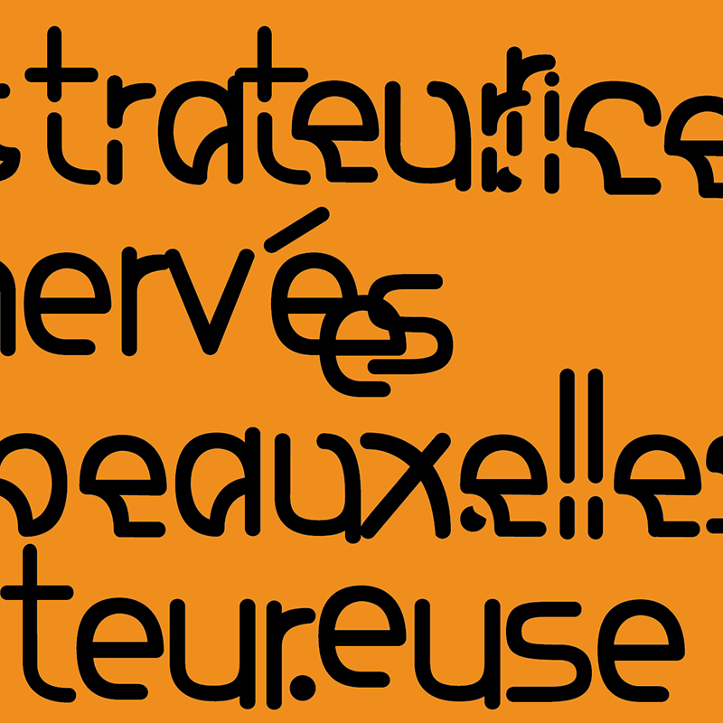

Marcel
 ⁂ Marcel est une typographie qui a été travaillée sur un angle différent des autres typographies que j'ai pu dessiner, de ce fait elle sera probablement utilisée uniquement pour présenter mon travail. Marcel est le nom de mon grand-père décédé en 2019. Son décès fut un moment très marquant dans ma vie.
Je ne voulais pas pour autant parler de ce moment au travers de la structure de cette typographie. Au contraire, je voulais qu’elle illustre ma relation à mon grand-père et non son décès.
⁂ Cette typographie est alors construite avec des terminaisons arrondies et des fûts très linéaires. De ce fait elle est lisible mais ne devient pas agressive.
⁂ Marcel existe sous deux formes, une forme linéaire ainsi qu’une forme déconstruite.
▷ Typographie
▷ 2022-...
marcel